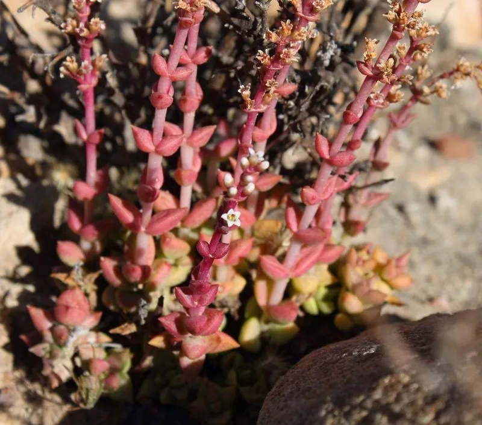

多肉植物 · 植物界
火祭 Crassula capitella

景天科青锁龙属多年生肉质植物，叶片交互对生、层叠如塔，秋冬光照充足时整株转为鲜红色，如燃烧的火焰。
- 分类
- 门被子植物门纲木兰纲目虎耳草目科景天科属青锁龙属
- 栖息环境
- 原产南非干旱地区，栽培需光照充足、干燥通风
- 地理分布
- 原产南非；中国各地作为观赏多肉广泛栽培
- 保护级别
- 暂无评估；栽培观赏植物，不涉及保护等级
物种志
火祭为景天科青锁龙属多年生肉质植物，茎直立或匍匐，高可达二十厘米。叶片交互对生，长披针形，先端尖，肥厚，排列成四列，层层叠叠如塔；常态下为绿色，秋冬光照充足、温差大时整株转为鲜红色。花期秋季，花小，白色，生于茎顶；蓇葖果，种子细小。
火祭原产南非，中国各地广泛栽培。它喜光、耐旱，春秋为生长旺季，夏季高温时需遮阴控水；适宜疏松透气、排水良好的基质，忌积水和闷热。叶色红艳、群生性强，是多肉拼盆和阳台栽培的常用品种；光照不足时叶片变绿、株型松散。繁殖以枝插为主，剪下的枝条晾干后插土即可生根。
形态与习性
- 株型茎直立，叶四列层叠
- 叶色绿色，出状态鲜红
- 花期秋季，花小、白色
- 光照喜光，光照足则红艳
- 水分耐旱，干透浇透
- 土壤疏松排水良好的基质
- 主要用途多肉拼盆、阳台盆栽
趣味知识
- 火祭在秋冬大温差下整株变红，像一簇燃烧的火焰，因此得名。
- 它的叶片交互对生、排成四列，层叠如一座小塔。
- 火祭群生性强，一根枝条扦插后很快就能长成满满一盆。